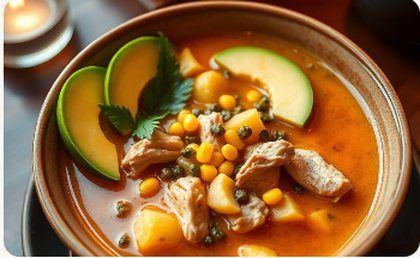
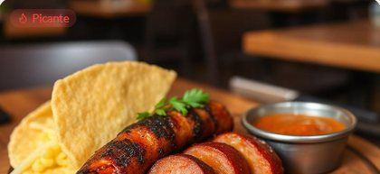
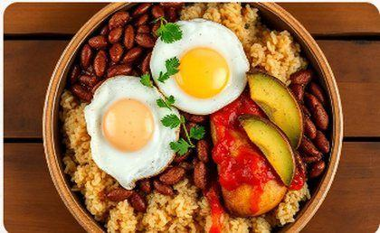
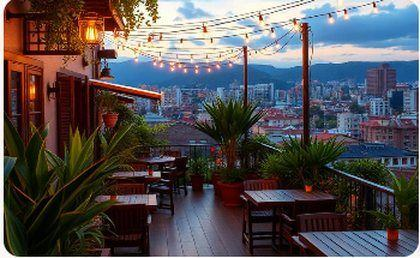
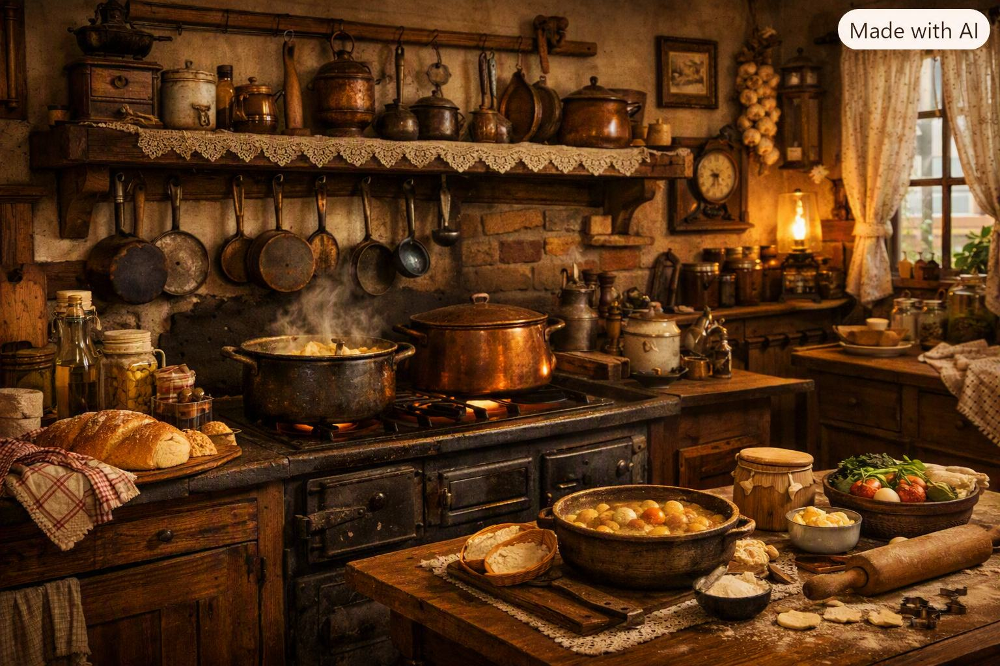
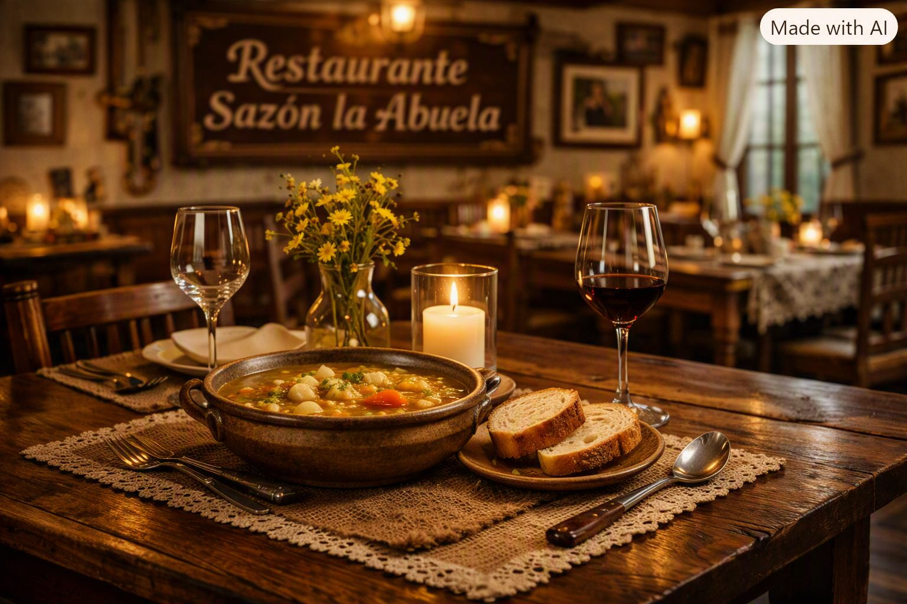
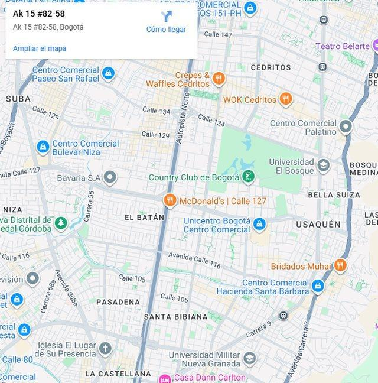

🌿
Ingredientes Frescos
Productos locales seleccionados diariamente de los mejores proveedores.
Descubre la auténtica gastronomía colombiana en un ambiente cálido y acogedor. Cada plato cuenta una historia de tradición y pasión.

Desde 2009, El Sazón de la Abuela ha sido el punto de encuentro para amantes de la buena comida colombiana en el corazón de Bogotá. Nuestra historia comenzó con una simple misión: compartir los sabores auténticos de nuestra tierra con cada comensal que cruza nuestras puertas.
Nos especializamos en cocina tradicional colombiana, desde el reconfortante ajiaco bogotano hasta la abundante bandeja paisa. Cada receta ha sido perfeccionada a lo largo de los años, manteniendo la esencia de los sabores que nos definen.
Productos locales seleccionados diariamente de los mejores proveedores.
Cada plato es preparado con la pasión y dedicación de nuestros chefs.
Recetas tradicionales colombianas transmitidas por generaciones.
Un espacio cálido donde cada visita se convierte en un momento especial.
Explora nuestra selección de platos tradicionales colombianos, preparados con los mejores ingredientes y mucho amor.
 Popular
PopularFrijoles, arroz, carne molida, chicharrón, chorizo, huevo, aguacate, arepa y patacón.

PopularSopa tradicional bogotana con pollo, tres tipos de papa, mazorca, guascas, crema y alcaparras.
Caldo tradicional con costilla de res, yuca, plátano, papa, mazorca y cilantro.

PicanteChorizo artesanal a la parrilla con arepa, hogao y limón.
Empanadas crujientes rellenas de carne o pollo, servidas con ají casero.

Tamal tradicional envuelto en hoja de plátano con pollo, cerdo, arroz y verduras.

TradicionalCerdo relleno de arroz, arvejas y especias, servido con arepa.
 Vegano
VeganoRefrescante limonada con crema de coco, perfecta para acompañar cualquier plato.

Tradicional postre bogotano con natas de leche, canela y azúcar.
Platos que han conquistado el paladar de miles de comensales y se han convertido en favoritos de nuestra clientela.
Nuestra versión del clásico ajiaco santafereño, preparado con tres tipos de papa, pollo desmenuzado, mazorca tierna y el toque especial de guascas frescas.
Reservar para ProbarDe lunes a viernes disfruta de nuestro menú ejecutivo con sopa, plato fuerte, bebida y postre incluidos.
Ver OpcionesAsegura tu lugar en El Sazón de la Abuela. Completa el formulario o contáctanos directamente por WhatsApp o teléfono para una reservación inmediata.
Lunes - Viernes 11:30 AM - 10:00 PM
Sábado 12:00 PM - 11:00 PM
Domingo 12:00 PM - 8:00 PM
Conoce nuestro restaurante, nuestra cocina y nuestros platos a través de estas imágenes.



La satisfacción de nuestros comensales es nuestro mayor orgullo. Conoce sus experiencias en El Sazón de la Abuela.
“El mejor ajiaco que he probado en mi vida. Me transportó a la cocina de mi abuela. El servicio es impecable y el ambiente muy acogedor.”
María Fernanda LópezBogotá“Vine buscando una buena bandeja paisa fuera de mi ciudad y la encontré aquí. Abundante, deliciosa y con todos los elementos perfectos.”
Carlos Andrés MejíaMedellínEstamos ubicados en el corazón de Bogotá, con fácil acceso desde cualquier punto de la ciudad.

Carrera 15 #82-58, Zona G
Bogotá D.C., Colombia
Lunes - Viernes 11:30 AM - 10:00 PM
Sábado 12:00 PM - 11:00 PM
Domingo y Festivos 12:00 PM - 8:00 PM
+57 300 123 4567
+57 (601) 765 4321
TransMilenio
Estación Calle 85 - A 5 minutos caminando